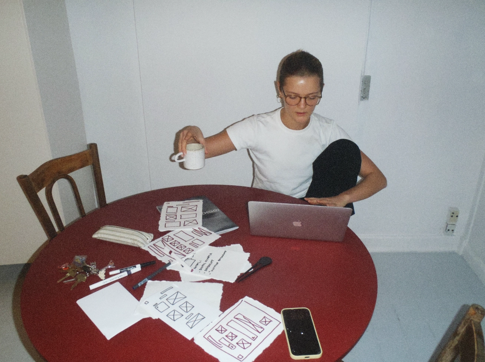
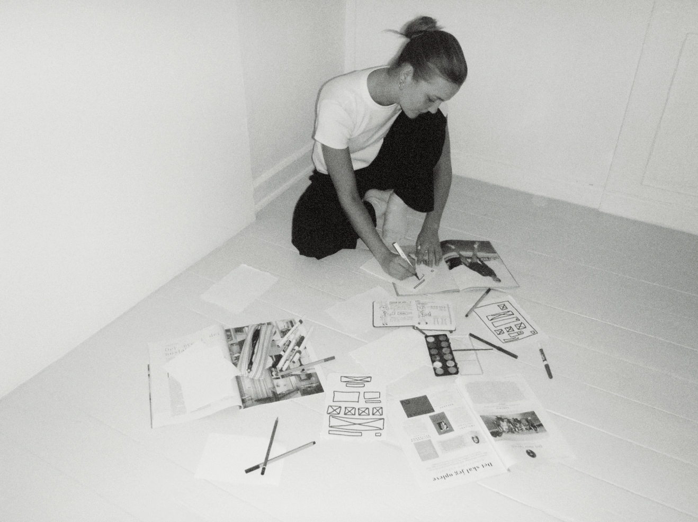
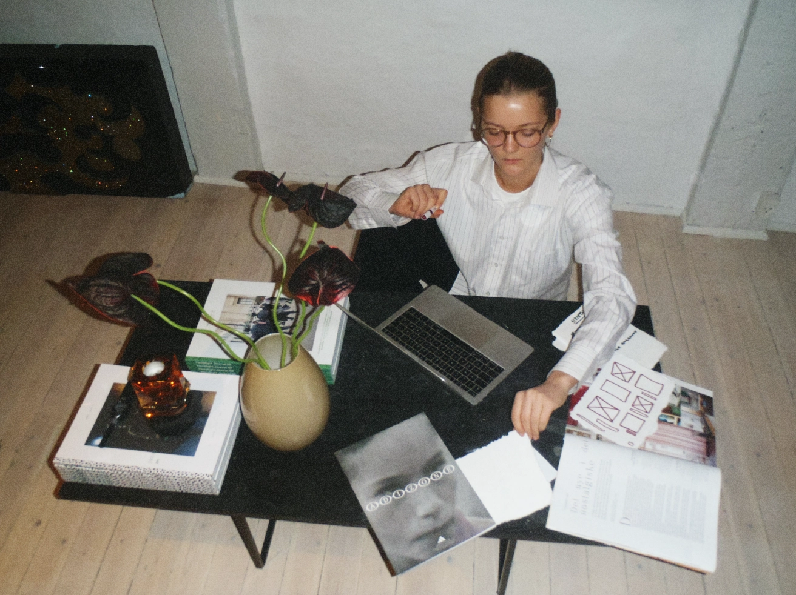

ABOUT ME
My name is Anna Pri Kovsted, and I am a fifth-semester student at Copenhagen Business Academy (EK).
Before studying
Creative Branding, I studied Multimedia Design for 2 years, where I was an intern at Bold
Scandinavia, one of Denmark's
leading branding agencies, where, as a junior Graphic Designer, I gained experience in how brand
strategy is translated
into visual identity and communication.
Alongside my studies, I completed a course in Content Marketing at the Danish School of Advertising
last year, where I
further explored how ideas can be transformed into effective and engaging communication.
I am curious, creative, and always looking for new ways to tell stories through visual content and
digital experiences.
I love experimenting with ideas, colors, and formats, and I am passionate about creating content
that captures attention
and evokes emotions.
Through both academic and external projects, I have built experience in translating concepts into
practical digital
solutions that balance creativity and functionality. I enjoy working hands-on with the entire
process, from idea
development to design and execution, and I approach each project with curiosity, playfulness, and a
focus on creating
results that make an impact.


